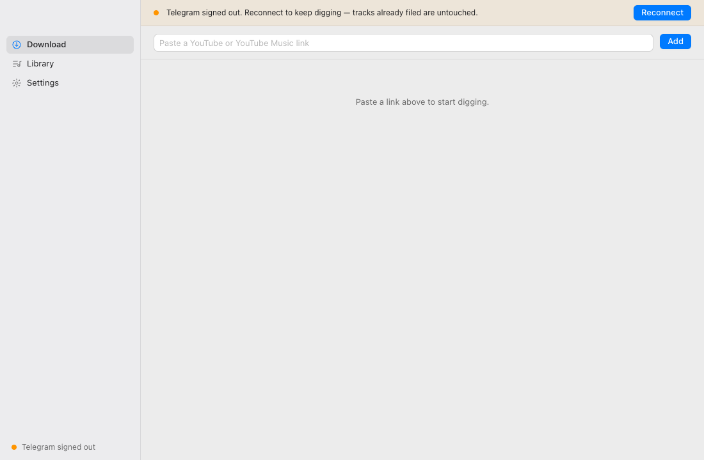

Flackey
Paste a YouTube link. Get the best copy that exists — lossless where Soulseek has it — tagged and filed where Rekordbox will find it.
Download for Apple SiliconLatest release · macOS 12 or newer · Apple Silicon
Apple Silicon Mac, macOS 12 or newer. A Telegram account, a Soulseek account, or both — the app makes the Soulseek one for you.

Install
- Unzip Flackey.zip.
-
Run this in Terminal.
xattr -dr com.apple.quarantine ~/Downloads/Flackey.appThe app is not signed with an Apple Developer certificate yet, so macOS blocks it until you clear the download flag. Do this only for software you chose to install.
- Open it.
What It Does
Finds The Real Track
A Telegram bot or Soulseek, matched and verified, not a YouTube rip.
Lossless Where It Exists
Soulseek copies are checked against the recording before they land in your library.
Filed For Rekordbox
One folder per artist, playlists as M3U8, tags filled with genre and label.